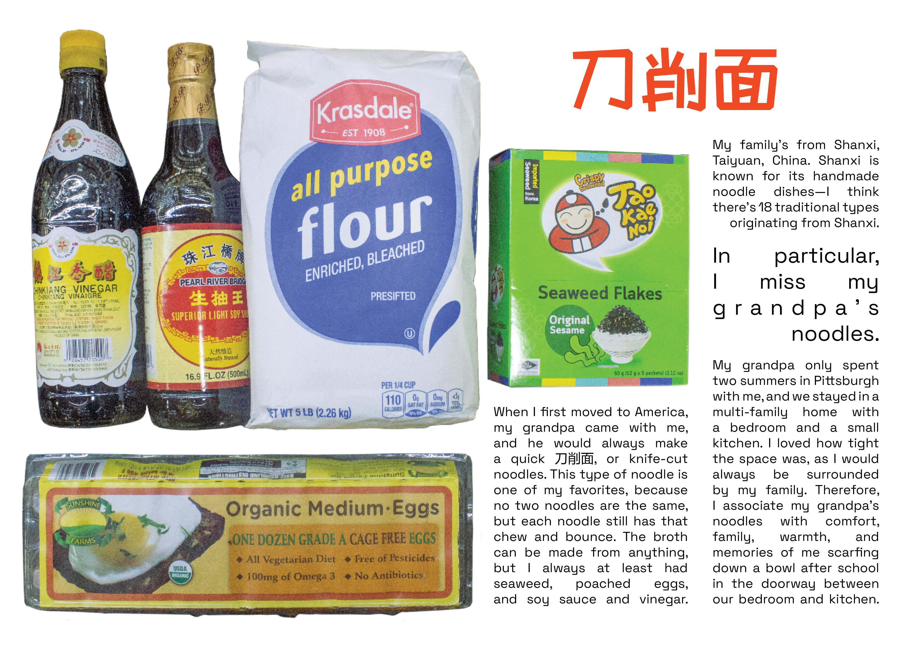
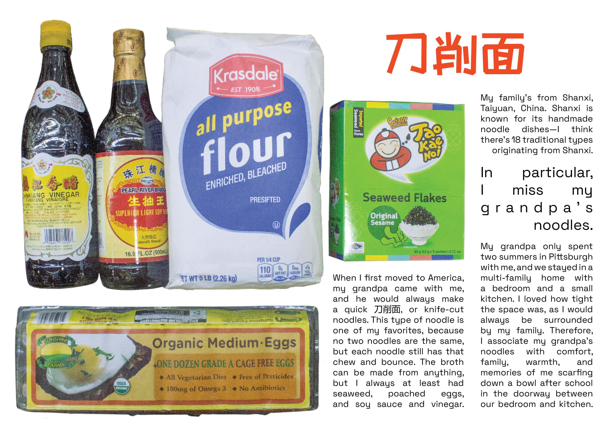

graphic design
photography
OVERVIEW
For my photography foundation final, I was inspired by Emily Jacir’s "Where We Come From" project, a series of photographs, texts, and videos stemming from the question she posed to Palestinian exiles: "If I could do anything for you anywhere in Palestine, what would it be?"
Timeline
April 2023, 3 weeks
Location
Providence, RI
INSPIRATION
Inspired by "Where We Come From"'s ability to merge text and photography, focus on audience participation, and desire to provide a service for others, I devised this project to bring together heritage, food, and memory. Food has largely shaped my identity growing up and has helped me in bridging the language and cultural barriers between me and my relatives in China.
The only instructions we were given were to 1. work after an artist and 2. produce at least 5 photographs inspired by that artist's work. However, I felt that the latter posed a limitation to my project's structure in particular since I wanted to find a way to best combine multiple text and photograph pairings into one cohesive piece. After pondering the best format for my project, I decided to give a shot at making my first zine.
I first reached out to some friends over text with the following questions:
What memories do you associate with the dish?
I ended up receiving ten responses and created a moodboard.

CONNECTION TO ARTIST
I initially struggled to find the most effective way to “carry out my participants' wishes” and narrow down the scope of the project. In order to properly follow in Jacir's footsteps, I chose to include every participants' full responses with no edits, thus allowing them to take the lead in shaping the zine's content. My job was only to accompany their stories with the appropriate visuals and aesthetic.
PRESENTATION
Like “Where We Come From,” I wanted my participants to handwrite their responses to add an extra layer of intimacy to the project but ended up settling with typed responses to make things easier for my respondents’ schedules. The responses I received were very much of varying lengths, but I had to find a way to give everyone an equal spread in the zine since all the responses were equally important to this project. Visually, I had to find a balance between text and image to fill up the whole page but use different photographs and textboxes to elevate their stories depending on the amount of writing received.
I took nearly 100 photographs and edited them to create a zine. Since many responses included remnants of my respondents’ childhoods, I decided to go for a playful look in both the typography and cropped photos, almost like a scrapbook a child could assemble. I drew from the visual identity of Good Fortune in its signage and bright colors.


 

Maintain a consistent design language.
This was my first zine project and thus first time having to work on a specific look across multiple pages. Since all the pages were relative, when one page looked less complete than the others, I had to make sure it was up to par with the rest or else the incompleteness would feel more apparent.
Letting others guide the project.
Although I was initially apprehensive about giving over so much control to the "user," I realized how much I love hearing the stories of others. I found great joy in seeing the excitement and thoughtfulness in many of my participants' responses. I gained a newfound appreciation for the twoway nature of participatory art.
Work beyond the prompt as you see fit.
While I was only required to produce 5 photographs for my final assignment, I chose to make a zine to have a more cohesive project that treated text and ../images equally. It definitely exceeded the scope of the project, but it felt right and was so much fun to make.